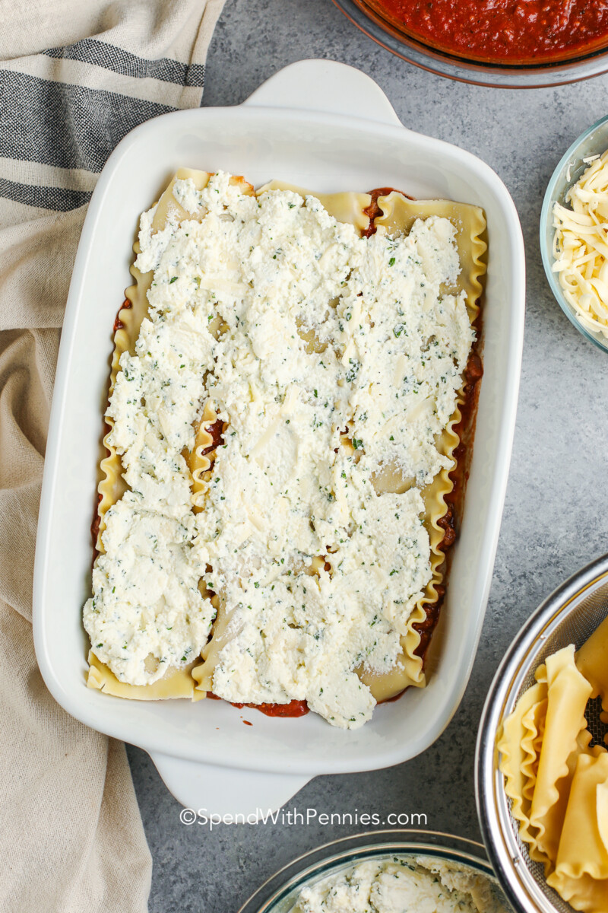

Lasangna

Homemade lasagna may have a few steps, but each step is easy – and I assure you it’s worth the time; the perfect Italian meal!
The best lasagna recipe is made with ingredients that you know, and it’s not difficult at all! All you’ll need for this easy lasagna recipe is one pan, one bowl, and a 9×13 baking dish!
ingredients
-
cheese filling
-
meat
- sauce
- spinach
Steps
-
Boil pasta: Cook in a large pot of salted water per the recipe below.
-
Prepare meat sauce: Cook sausage and beef with onion and garlic. Drain well, add the pasta sauce & simmer it for a few minutes to thicken.
-
Combine cheese mixture: Stir the cheese mixture together in a bowl.
-
Layer & bake: Layer the meat sauce and cheese mixture with lasagna noodles and bake until browned and bubbly.